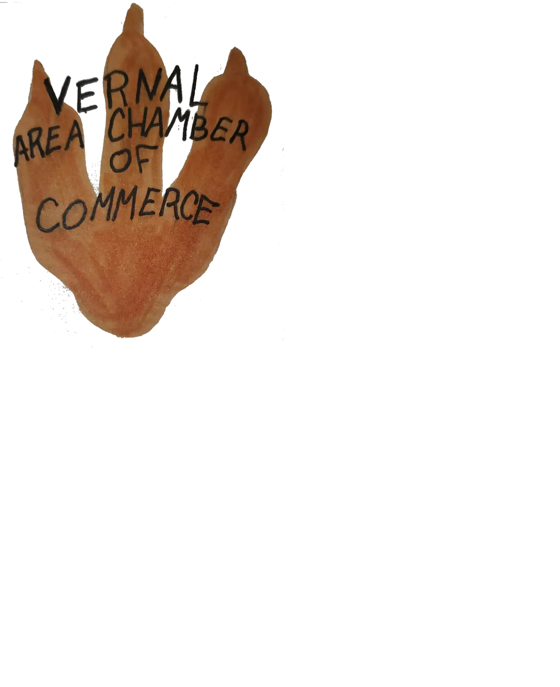

Name
The name will be Vernal City Chamber
Domain
The domain would be venalcitychamber.org
Purpose
The purpose of this site will be to provide information for potential visiters to the city, as well as for the local population. The information given will consist of: events that are going on, useful information about specific businesses, and general information about the town. Some of the services provieded will include: a contact page for questions, a directory wich provides information about the businesses in town, and a join page wich will allow for buisnesses to join the chamber.
Logo
